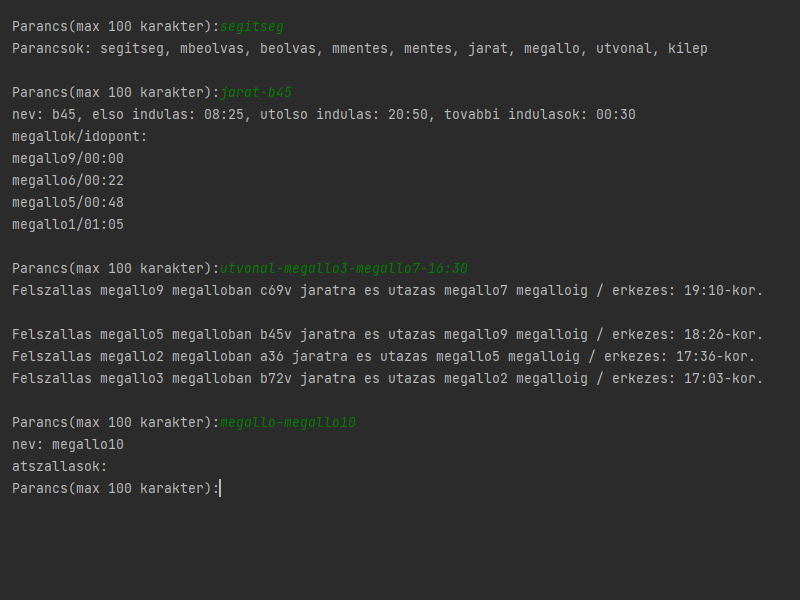
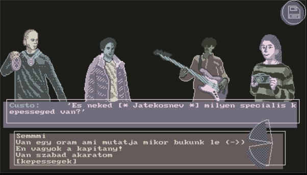

Az állatorvosi nyilvántartórendszer célja egy állatorvosi rendelő számmára rendelkezésre álló adatok kezelése. A gazdákról, állatokról, kezelésekről szóló adatok rögzítésén, módosításán és keresésén túl fontos szempont az átlátható, logikusan felépített kezelőfelület. Ezen felül a felhasználói élményt növelik az "intelligens" funkciók, mint pl. új kezelés felvételekor, ha a kezelés címében szerepel az oltás szó, akkor a rendszer felajánlja az adott állat legutóbbi oltásának a kezelés dátumára való automatikus frissítését.
A játék célja, csakúgy, mint az eredeti Sokoban-é, hogy egy raktármunkással a dobozokat a célmezőkre juttassuk úgy, hogy azokat csak magunk előtt tolva tudjuk mozgatni. A játék 10 tutorial pályával és az eredeti kiadás 50 pályájával érkezik. Ha pedig ezeket már kívülről fújod, vagy csak simán valami újra vágynál, a program kompatibilis a legtöbb internetről letölthető pályával, szóval azokat is kipróbálhatod. Végül ha már igazi profi vagy, létrehozhatod a saját pálya kollekciódat a játékon belüli szerkesztővel.
A választott feladatom egy autószerviz elkészítése volt, amelyben a felhasználó az ügyfeleinek az adatait tudja tárolni, valamint ezen ügyfelek autóinak adatait. A program konzolon jelenít meg egy barátságos felületet, ahol a felhasználónak ki kell választania a kívánt funkciót. A program képes új ügyfél hozzáadására, új autó hozzáadásra, autó törlésére, javítás feljegyzésére, stb.

A program háromféle matematikai probléma megoldására képes: legnagyobb közös osztó megkeresése, lineáris egyenletrendszerek megoldása és kongruenciák megoldása. Ezekhez a műveletekhez az értékeket a felhasználótól kéri be, vagy fájlból olvassa be. A számításokat ismert számelméleti algoritmusok segítségével végzi el és a lépéseket egy szövegfájlba menti.
Sokszor megeshet velünk, hogy egy-egy kép csak egy kis igazításra szorulna, azonban nem értünk a professzionálisabb programok kezeléséhez. Ez az alkalmazás arra készült, hogy képeken a legegyszerűbben tudjunk módosításokat végezni. Színkorrekció, fényerő, kontraszt, stb., ezek mind megtalálhatóak az opciók között. Emellett elérhető egy speciális funkció is, amely eltávolít minden abszolút zöld részt egy képről, majd egy másik képet ollóz össze vele. Ez a leegyszerűsített verziója a filmekben, videókban használt effektnek.
A program egy tömegközlekedési útvonalkereső kezdetleges, menüvezérelt változata. Be lehet vinni buszjáratokat, illetve megállókat fájlok segítségével, és megadni, melyik járat milyen útvonalon megy, mikor ér ezekbe a megállókba, illetve melyik megállók vannak gyalogos átszállásra egymástól. Ezután ezek a járatok és megállók között lehet útvonalat keresni a program segítségével.
Házifeladatnak egy 2D-s platformer játék elkészítését vállaltam. Az inspirációt a mára már nosztalgikussá vált „Fireboy & Watergirl” flash-játék adta. Bár a használt textúráim egyszerűek, a történet annyi, hogy egy ősi templomban magára ébredő kis gólemet kell elnavigálnunk a kijáratig a pályán, miközben a lehető legtöbb ékkövet megpróbáljuk összeszedni. Vigyáznunk kell a vízzel és lávával is, hiszen bár nem egyből ölnek, szépen lassan elfolyósítanak minket, ezzel megváltoztatva a mozgásunkat, hogyha pedig túl sokat időzünk bennük, végünk. Miután a kész játékot megosztottam tankörtársaimmal, barátokkal, nem került sok időbe, hogy azon menjen a versengés, ki tud hamarabb végig érni a pályán. Valamint megjelentek a mókásabbnál mókásabb ötletek a pályát/karaktert alkotó textúrák kicserélésére.
A programom egy nyilvántartás jellegű határidőnapló, amely rekordokban tárol eseményeket és ezeknek az adatait (név, helyszín, megjegyzés, dátum, pontos idő). Eseményeket létrehozni a menün belül lehet, ezek egy külön mappában tárolódnak. Lehetőség van bármely esemény törlésére, illetve azoknak az időrendi (nap, hét, hónap) kilistázására.

A program egy parancssoros alkalmazás, ami PPM formátumú képeken képes egyszerű módosításokat elvégezni. Meg tudja változtatni a megnyitott képek fényerejét, kontrasztját, el tudja őket homályosítani, képes őket kiélesíteni, valamint képes megkeresni a képen található éleket. A képernyő képen bal oldalt látható egy @jessbaileydesign által készített kép, aminek jobb oldalon látható a módosított változata, miután elvégezte a program rajta az élkeresést.
A sakk-program az SDL multimédiás függvénykönyvtárat használja egy sakktábla és azon két játékos által irányított lépések megjelenítésére. A program a sakk szabályai szerint működik. A főmenüben a NEW GAME gombra kattintva megjelenik egy új játék a klasszikus sakk felállással. A LOAD GAME gombra kattintva betölthető egy korábbi játékállás. A lépéseket a bal egérgombbal való kattintással lehet véghez vinni, rá kell kattintani kívánt bábura és utána annak a lehetséges lépéseit megjelölő zöld körökre. A jobb oldalt található kezelőfelülettel a lépés visszavonható, visszajátszható illetve az aktuális játékállás lementhető.
A sokoban egy klasszikus ládatologatós logikai játék, melynek lényege az összes láda célba juttatása egy labirintus szerű falakkal határolt, közfalakat tartalmazó pályán a lehető legkevesebb lépésből. A ládákat csak tolni lehet (húzni nem!) és egyszerre csak egy láda mozgatható. A játékost a nyilakkal és a W, A, S, D billentyűkkel lehet irányítani. A program az összes hagyományos formátumú sokoban pályával működőképes.
A klasszikus Sudoku játék, kiterjesztve más pályaméretekre. A megjelenítés konzolon történik az econio könyvtár segítségével. A rejtvény megfejtését a mezők színezése segíti. A kiválasztott mező és az azzal egyező tartalmú mezők szürke, illetve fehér színűek, a többi pedig sötét- és világoskék. A sötétebb szín az eredetileg megadott értékeket, míg a világosabbak a játékos által beírt, módosítható számokat jelölik. Ha hibás lépést tennénk akkor az azt megakadályozó mező piros színű lesz.
Huffman-kódolást alkalmazó tömörítő/kicsomagoló parancssori felületen működő, argumentumi kapcsolóval vezérelhető programot készítettem. A Huffman-algoritmus olyan mohó stratégián alapuló kódolást jelent, ahol az egyes kódok nem azonos hosszúságúak. A jeleket gyakoriságuk figyelembe vételével kódolja. A programról lehetne még sokat mesélni, de azt hiszem a számok magukért beszélnek. (A program a debugmalloc.h könyvtárat 19kb-ról 11,5kb-ra tömöríti).
A már megszokott farmos játék helyett, a minden rendezvényen főszereplő chilis bab (CSB) készítésére ad lehetőség a CSB Empire Remastered II. Chili, bab, és kukorica ültetésével, majd aratásával pontokat lehet gyűjteni, azokat elmenteni és később visszatölteni. Így már pontokban is tudjuk mérni a CSB iránti szeretetünket.
Nagy házimként a közismert Snake játékot valósítottam meg az SDL könyvtár segítségével. A cél minél több gyümölcs felszedése, minél több pont elérése. Egyszerre akár ketten is játszhatnak a játékkal. Minimalista dizájnra törekedtem, a kígyók színei indítás előtt módosíthatók. A játék forráskódja megtekinthető githubon: https://github.com/gutasiadam/snakeGame
Egy egyszerűen kezelhető, testre szabható kinézetű sakkprogram, amellyel kiválóan lehet játszani, játszmákat menteni, visszatölteni és visszajátszani, új lépéssorozatokkal kísérletezni. Ha a szürke hétköznapokban minden vágyad egy kis sakkozás magaddal, vagy valaki mással, és már unod a rendes sakktáblákat és a jól bevált online alkalmazásokat, próbáld ki ezt az egyszerű alkalmazást, amellyel nem lesz kérdés, hogy történt-e a játszma során csalás, és a győzelmeidet többször is ellenfeleid orra alá tudod dörgölni. A vereségeket pedig... nos, senki nem mondta, hogy mindent el kell menteni. https://github.com/ngyimesi/hw_chess_norbey
Hosszú még az éjszaka és mégis milyen gyorsan telik jó társaságban. A programom egy kalandjáték, ami ezt próbálja megvalósítani. Itt a játékos négy másik karakterrel együtt próbál különféle helyekre bejutni, mielőtt még lebuknának. A különböző helyszínek közül egy külön menüből lehet választani. A játék során különféle problémákkal találhatja szembe magát a játékos, ilyenkor négyféle opció közül választhat, vagy felhasználhatja valamely csapattársa speciális képességét. Viszont a rossz döntésekkel zajt csaphat és ezzel fogyasztva a képernyő jobb alsó sarkában található négy életét, ami, ha elfogy lebuknak és a játék véget ér.
A játékos célja, hogy az általa vezérelt holdkomp biztonságosan landoljon a Hold hepehupás felszínén. Ehhez segítségére van a holdkomp hajtóműve, valamint műszerei, melyek nem csak a jármű állapotát, hanem a biztonságos leszállás lehetőségét is kijelzik. Mivel a holdkomp olcsó anyagokból készült, ezért rendkívül kényes, a tankjaiban lévő üzemanyag pedig nem segít a helyzeten, ezért annak is megvan a lehetősége, hogy a holdkomp felrobban, ha rossz helyen vagy módon ér földet... ebben az esetben Holdat.
A játék célja, hogy minden ládát rátoljunk a célokra. A játékos egyszerre csak egy ládát tud tolni, és ládát húzni nem tud. Egy szint akkor van készen, amikor minden láda egy célon helyezkedik el. A program nem tartalmaz beépített pályákat, de az internetről sok pályát lehet hozzá letölteni, mivel képes XSB fájlokat beolvasni és menteni is. A mezők és játékos kinézete Kenney Vleugels (Kenney.nl) munkája alapján készült, néhány saját módosítással.
A program az akasztófa játék egy továbbfejlesztett változata, amelynek gonoszsága abban rejlik, hogy nincsen egy előre kigondolt szó, hanem a program a felhasználó tippjeit véve módosítja a lehetséges gondolt szavakat, ezáltal megpróbálva a lehető legkevesebb segítséget adni a játékosnak. A játékban 3 nehézség szint közül lehet választani, és szintenként a legjobb 5 játékos felkerül a dicsőséglistára.
A program a Conway-féle életjátékot valósítja meg. Ez egy sejtautomata, amiben sejtek két állapotot vehetnek fel: élőt vagy halottat. A játékos feladata mindössze a kezdőállapot élő sejtjeinek meghatározása. Ezután a program lépésenként számítja ki a következő állapotot, ami a sejtek szomszédjaitól függ. A képen játék által alkotott "vészjel" alakzat látható.
Nagy házi feladatnak egy Legyen Ön Is Milliomost választottam. A játékprogram, hasonlóan az eredeti kvízműsorhoz, általános tudásunkat teszi próbára. Minden egyes kérdéshez négy válaszlehetőség tartozik, azonban azok közül csak egy a helyes. Rossz válasz esetén a játékos veszt és ha eljutott az ellenőrzőkérdésekig, akkor azok nyereményével, egyébként semmivel sem távozhat. Jó válasz esetén megkapja a következő kérdést. A játék során a felhasználónak két segítsége van: a közönség véleményének kikérése és a kérdések felezése. Ezeket csak egyszer lehet felhasználni egy játék során.
Mindig is szerettél volna (valamilyen okból) repülő taxit vezetni? Ebben a játékban egy jövőbeli taxisofőrként az a feladatod, hogy minél gyorsabban elfuvarozz különféle lényeket az általuk megadott leszállóplatformra, miközben a tankolásról is gondoskodnod kell. Azonban óvatosan kell navigálni, mivel az utasok elgázolásával magunkra haragíthatjuk a rendőrséget, és akár egy erősebb koccanás is végzetes lehet a taxi számára. A játékos végső eredményét – azaz a sikeresen elfuvarozott utasok számát – elmenti a program a ranglistába, amit a főmenüből tekinthetünk meg. A játékhoz akár saját pályákat is készíthetünk szövegfájlban, melyek közül véletlenszerűen választ ki egyet a játék indításakor.
A GraphMaster egy grafikus kezelőfelülettel rendelkező program, amely gráfok ábrázolására, tárolására, illetve ezeken való algoritmusok futtatására lett kitalálva. A programban létre tudunk hozni bármilyen sok csomópontból álló, irányított vagy irányítatlan gráfot, éleket tudunk behelyezni a csomópontok közé, amelyeknek súlyokat is adhatunk. A csomópontokat az egér segítségével tudjuk mozgatni. Egy adott gráfot el tudunk menteni fájlba, megadva annak nevét. Az elmentett gráfok közül be tudjuk tölteni bármelyiket és azon újabb szerkesztéseket tudunk végezni. A program szemléltetni tudja egy adott gráfon a szélességi és mélységi bejárást, illetve meg tudja határozni két csomópont között a legrövidebb utat a Dijkstra algoritmus segítségével.
A játék lényege, hogy a játékos feltérképezze az egész pályát anélkül, hogy egy olyan mezőt választana ki, amely aknát tartalmaz. Ha ez sikerül, megnyeri a játékot. A játék akkor is véget ér, ha a játékos egy aknát rejtő mezőre kattint, ekkor értelemszerűen elveszti az aktuális játékot. Egy aknát nem tartalmazó mező felfedése után a mező helyén egy szám jelenhet meg. Ez a szám jelzi, hogy hány akna található a szomszédos mezőkben. Ez alapján tud a játékos következtetéseket levonni a pályán található aknák elhelyezkedését illetően. Ha úgy véli, hogy egy mezőn akna van, azt jelölni is tudja, ami nagy segítséget jelent a későbbiekben.
A programom egy aknakereső, ami egy egyszemélyes logikai játék. Egy négyzetrácsos tábla van, amin el vannak rejtve az aknák, illetve számok, amelyek az aknák megtalálásában segítenek. A feladat, hogy a játékos felfedje az összes olyan mezőt, amin nincsen akna úgy, hogy nem kattint (fed fel) aknát. Jobb kattintással zászlót és kérdőjelet lehet lerakni, amivel az aknák pontos illetve lehetséges helyzetét jelölheti magának a játékos, bár ezeket nem kötelező használni. Minden szám azt jelzi, hogy a körülötte lévő nyolc mezőn mennyi akna van. Az alábbi kép egy helyes játékállást ábrázol (a számok és aknák elhelyezése teljesen megfelelő).
2025-ot írunk, amikor is kereken 53 esztendővel az Apollo 17 holdra szállása után, újra lehetőséget kapott az emberiség, hogy a Hold felszínét koptassa bakancsaival. De ehhez, először is sikeresen le kell tennie a játékosnak a holdra szálló egységet a felszínre. A feladat nem egyszerű, hiszen számtalan tényezőt figyelembe kell vennie a pilótának. De, mivel képzettsége és bátorsága határtalan, ezért bizonyára sikeres lesz a küldetés és milliárdok örülhetnek majd vele együtt a Földön!

A program a Conway-féle életjáték SDL2-ben megalkotva. A játéktéren a celláknak értéket egérrel adhatunk. A szimuláció vezérlését a különféle gombok teszik lehetővé. Léptethetjük egyesével a szimulációt, de akár automatikusan is futtathatjuk azt. A szimuláció gyorsasága állítható. A pálya egy gombnyomással tisztára törölhető. Amennyiben el szeretnénk menteni az állapotot arra is van lehetőség. Csak egy fájlnevet kell megadnunk, hogy későbbi futtatáskor a megadott néven betölthessük az elmentett állapotot. A cellák mérete a space lenyomásával ciklikusan változtatható.
A Moon Lander játékban a holdkomppal történő sikeres leszállás megvalósítása a cél. Elsőre egyszerűnek tűnik, azonban rengetek akadályt kell lebirkóznod. Elég kis vízszintes és függőleges irányú sebességgel kell a leszállásra kijelölt helyre érkezni, még mielőtt az üzemanyagod elfogyna. Nem az űrhajó sebességét, hanem a gyorsulását tudod irányítani a megfelelő nyilakkal. Neked sikerülne?
A program célja közösségi hálókkal kapcsolatos szociológiai elméletek látványos modellezése. Az első szimuláció az információk terjedését, a második a közösség különböző tagjainak a közösség egészéről alkotott képét, a harmadik pedig egy tulajdonság közösségen belüli terjedését mutatja be ugyanazon, a felhasználó által a konzol felületen vagy fájlban megadott kapcsolatrendszeren keresztül.
A klasszikus ki nevet a végén társasjáték gépesített változata. A játék SDL segítségével jelenik meg. A játék célja, hogy az egyik játékos minden bábuját a ház mezőibe juttassa a tábla körül egy kört megtéve. A játékot színesíti, hogy le tudjuk ütni másik játékos bábuját és eldönthetjük, hogy melyik bábunkkal szeretnénk lépni. A játékállásokat lehet menteni és betölteni.
Conway-féle életjáték készítése SDL-felhasználásával. Az egérrel rajzolt vagy fájlból beolvasott alapállapotot lehet a már megszokott Conway által lefektetett szabályokkal. A Start és a Stop indítják és állítják le a szimulációt, vagy ha kíváncsiak vagyunk a szimulációnak a lépéseire részletesen akkor a Step gombbal léptethetjük a szimuláció futását. Az élettér méretét is állíthatjuk ilyenkor mindig változtatja a sejtek méretét hogy minden esetben beleférjenek a statikusan megadott élettérre.
A program a jól ismert 2048 egy változatát valósítja meg. A játék célja a kisorsolt kettesek összekombinálásával a 2048-as szám elérése. A lent lévő 16 mezőt azonban jól kell kihasználnod, ha betelik, a játékot elveszted. Ha elfáradtál, a játék a menübe lépéskor automatikusan elmenti az aktuális játékállást, és később ezt folytatni tudod. Kombináld össze a kockákat, és érd el a jól megérdemelt helyed a ranglistán!
Az általam elkészített játék a Space Invaders, amely eredetileg 1978-ban jelent meg, és az egyik legikonikusabb videójátékká nőtte ki magát. A játék az SDL2 grafikus könyvtárral készült el. A játék célja a felülről érkező űrlények elpusztítása, mielőtt ők lőnek le minket, vagy le nem érnek a pálya aljára. A játékban két nehézségi szint van, melyek nagyban befolyásolják a körönként nehezedő játékélményt. A körök száma végtelen, így nincs határ a pontok terén, ezzel a jól teljesítő játékos megérdemelten bekerülhet a dicsőséglistába.
A felhasználó a program segítségével létre tudja hozni a saját adatbázisát vagy megadni egy előre létrehozottat, majd ezekkel az adatokkal különféle műveleteket tud megvalósítani, mint például új elem létrehozása, régi módosítás vagy törlése, mező szerinti keresés, wildcard keresés, az adatbázis fájlba mentése és akár egy személy adatainak vCard formátumba történő exportálása fájlba, vagy pedig importálása az adatbázisba.
A játék a régi idők lapozgatós könyveit idézi, felkínál választási lehetőségeket a játékosnak, aki a választott opció számának begépelésével odalapozhat, így folytatva kalandozását. Kalandozás során a játékos tárgyakat gyűjt, amik elősegítik az előremenetelét. A különböző opciók különböző végkifejletekhez vezetnek, kalandorunk azonban, ha nem vigyáz, gyorsan a sírban találhatja magát!
A játék az eredeti space invaders alapján készül. Célja, hogy hajónkat jobbra balra manőverezve kilőjük a több körön át érkező űrlényeket. Az egyes űrlények kilövéséért kapjuk a pontokat. A játék grafikus felülete SDL-lel készült. A játék rendelkezik dicsőséglistával, mely a három legjobb eredmény tartalmazza. Ezen kívül 3 nehézségi szint közül választhatunk, melyek közti különbség az űrlények élete, száma és sebessége. A játék akkor ér véget, ha mind a 10 körben kilőttük a szörnyeket, vagy hajónk meg nem semmisül, vagy az űrlények át nem lépik a Föld légkörét (piros vonalat).
Labirintus játék Az én programom egy labirintus játékot valósít meg. A program képes véletlenszerű labirintusokat generálni és azokat megoldani. A játékost egy világoskék pötty reprezentálja, amit a bal felső sarokból kell eljuttatni a jobb alsó sarokba. Ha nagyon elveszettnek érzi magát a felhasználó, akkor kérhet segítséget a számítógéptől is. A program egy terminálban fut. A megjelenítéshez az ncurses könyvtárat használtam fel. A programom bővebb leírása és dokumentációja megtalálható a következő címen: https://adriansopar.hu/hu/projects/maze.html
A program egy SDL alapú, "Survival" típusú játék. A játszma során a bal oldalon található, animációkkal felruházott karakterünket tudjuk mozgatni minden irányba. Bármelyik egérgomb lenyomására lövedéket tudunk indítani vízszintesen jobbra (természetesen csak maximum fél másodpercenként). Ám a játék során a pálya jobb oldalán található skorpiók együttes erővel folyamatosan visszalőnek! A skorpiók három lövést bírnak ki, utána megsemmisülnek és 5 másodperc letelte után újrateremnek. A játék célja tehát, hogy minél több ellenséges skorpiót semmisítsünk meg mindamellett, hogy a karakterünk mozgatásával kikerüljük az ellenséges lövedékeket. Ha ez nem sikerül és eltalál bennünket egy lövedék, akkor életpontveszteségben részesülünk. A játszma végét a 0 életerő elérése jelenti. Ezután a program dátummal ellátva kiírja egy szöveges fájlba a játékos statisztikáit: a végső elért pontot, a játékos által kilőtt lövedékek darabszámát, a betalált lövedékek darabszámát, illetve az utóbbi két darabszám arányát, vagyis a pontosságot. Vigyázat! A végleges pontszám kiszámításakor az eredetileg elért pontszám beszorzódik a pontossággal, tehát a játék a lövések precizitását is jutalmazza.
A programom egy utazástervező, amely egy város tömegközlekedési hálózatán megkeresi a legoptimálisabb útvonalat a felhasználó által megadott végpontok között, az indulási időtől is függően. Az adatfájlokból felépített gráfon a Dijkstra algoritmus segítségével keresi meg a legkorábbi érkezéshez tartozó utat. A programhoz a BKK nyilvánosan elérhető GTFS adatbázisából generáltam adatfájlokat, így az a teljes budapesti tömegközlekedési hálózaton képes útvonalat tervezni.
Gravity Pods című játék rekreációja. A játék célja, hogy a játékos sikeresen belelője a célba a töltését az ágyú segítségével. A játékos szabadon helyezhet le töltéseket, melyekkel az általa kilőtt töltés pályáját tudja megváltoztatni. A képen ezen lehelyezhető töltések segítségével lett megrajzolva a felirat.
A program a népszerű plants vs. zombies játék leegyszerűsített változata. A cél ugyanaz mint az eredetiben, hogy megvédjük a zombiktól a házunkat, de itt nem szinteket teljesítünk, hanem úgymond "túlélés" játékmódban játszunk, ahol a cél, hogy minél több pontot szerezzünk mielőtt elfogy az összes életünk. Még egy különbség, hogy a növényeket bármikor le lehet rakni, ha van elég pénzünk, ezért a játék hangulata is más, mint az eredetié, annál sokkal pörgősebb és nehezebb.
A klasszikus sakkjáték megvalósítása SDL-ben. Két játékos tud egymás ellen játszani lokálisan. A játék megmutatja a játékos számára az összes lehetséges lépést, így kezdők számára is ideális, emellett minden lépés után automatikusan elmenti a játék állását, így, ha valamiért félbe kell szakítaniuk a játszmát később folytathatják azt, de kezdhetnek új játékot is. Emellett lehetőségük van a lépések visszavonására, akár a játék elejéig. A játék ablakában megtekintethetik kinek kell lépnie és kijelzi az eddig megtett lépéseket is. A játék egy teljes képernyős ablakban fut és minden felbontást támogat.
A feladat egy aknakeresõ játék készítése, amelyben a pálya téglalap alakú és cellákból áll. Egy cellára rálépve megtudhatjuk, hogy az adott cellán van-e akna (ebben az esetben felrobbanunk – vége a játéknak), illetve, hogy hány szomszédos cellán van. A játékban lehetõség van: a tábla méreteinek a meghatározására, a táblán lévõ aknák számának megadására, a játékidõ mérésére (esetleg limitálására), a játékos által aknának gondolt cellák megjelölésére, aknamentes környék automatikus felderítésére.
A játékom egy kétszemélyes SDL2-es tankos játék, amiben a másik játékos tankját kell elpusztítani, miközben az ellenség lövedékei elől térünk ki. A pálya véletlenszerűen generált, szóval a kűzdelem mindig más és más. A tankokkal lehet egy keveset mozogni, bár a legjobb védekezés a támadás... A játékhoz az ihletet a klasszikus Bomb tankos játék nyújtotta.
Nagy házimnak a retró számítógépes játékot, az Aknakeresőt választottam. Elkészítéséhez az SDL grafikus könyvtárat használtam. A játékban lehetőség van a nehézség megválasztására (akár saját nehézséget is megadva). Ha a játékos beírja a nevét egy győzelemnél, még a dicsőséglistára is felkerülhet. A program képes a játékállást és a dicsőséglistát elmenteni és betölteni is.
A programom az aknakereső játékot valósítja meg. A játék lényege, hogy sikeresen felfedjük a nem aknákat rejtő cellákat a mezőkön levő számok segítségével. A játék időre megy, az óra látható játék közben és a pálya nehézsége bármikor módosítható. Mindemellett lehetőségünk van megtekinteni az eddigi rekordokat nehézség szerint.
A pálya téglalap alakú, cellákból álló tábla. Egy cellára rálépve megtudhatjuk, hogy az adott cellán van-e akna (ebben az esetben felrobbanunk – vége a játéknak), illetve, hogy hány szomszédos cellán van. Lehetőség van: a tábla méreteinek a meghatározására, a táblán lévő aknák számának megadására, a játékidő mérésére (esetleg limitálására), a játékos által aknának gondolt cellák megjelölésére, aknamentes környék automatikus felderítésére.
A program a sakk szabályait betartatva biztosít játéklehetőséget két játékosnak. A véget ért játszmák menthetőek, előhívhatóak, elemezhetőek. A játszmák, mint a hagyományos sakkban, nem csak mattadással érhetnek véget, hanem többféle döntetlennel is. Ezekből a program, egy nagyon ritkán előforduló eset kivételével az összeset kezeli. Egy zöld kör jelzi, hogy melyik játékos következik. Amikor egy bábura kattint, akkor megjelenik az összes lehetséges lépés, amit azzal a bábuval meg tud lépni, ezek közül választhat.
A nagy házimnak egy egyszerű platformert készítettem a Raylib könyvtár segítségével. A játékban egyetlen cél van, a minél magasabbra való eljutás, így a játék meglehetősen relaxáló tud lenni. Ebből kifolyólag a grafikai részlegen (amelynek jó részét én készítettem) egy ennek megfelelő környezetet választottam. Azonban valami lehet figyel téged.
A játék célja, hogy a játékosok közelebb kerüljenek 21-hez, mint az osztó. Ha ez sikerül akkor a feltett tét kétszeresét kapják vissza, ha viszont az osztó nyer akkor a tét elvész, illetve döntetlen esetén a tét visszajár. Úgy lehet nyerni, hogy minden lapnak van egy értéke, és úgy kell lapokat gyűjteniük a játékosoknak, hogy az osztó legyőzésére törekszenek, közben viszont vigyázni kell, hogy ne haladják meg a 21-et. A játék elején mindenki kap 2 darab lapot és tetszés szerint dönthet ezután, hogy kell-e még neki lap vagy már nem kér többet. Ha már egyik játékos sem kér lapot akkor jön az osztó (a gép) akinek 16 alatt kötelező lapot húznia, 17-en vagy felette pedig (a kaszinó verziótól eltérően, ahol kötelezően meg kell állni) ha van olyan játékos akivel döntetlent játszik vagy megveri, akkor nem húz lapot, ha viszont nincs akkor pedig addig húz, amíg ez nem teljesül illetve túl nem megy.
Nagy házim a Conway-féle életjáték elkészítése volt. A programom SDL grafikát használ a megjelenítéshez, a játékteret tetszőleges méretűre lehet állítani, lehet rá egérrel rajzolni, vagy pályát fájlból betölteni. A szimuláció kézzel vagy automatikusan is léptethető. Az automatikus szimuláció sebessége változtatható. A pálya jelenlegi állapotát pedig mentésképpen ki lehet exportálni tetszőleges nevű fájlba. Ezen kívül egy általam fontosnak tartott funkció, hogy a játék ablaka bármekkorára átméretezhető.
A sakk program egy barátságos sakkjátszmát biztosít felhasználói számára. Te és egy barátod együtt játszhattok egy kellemes sakkjátszmát a közismert, szélesen elterjedt sakkjáték szabályai szerint. A program rögzíti a játék menetét, így az könnyedén visszajátszható, lehetővé téve a játékelemzést, hibák javítását.
A játék első ránézésre egyszerűnek tűnhet: különböző égitesteken kell landolni. Ezt azonban nagyban megnehezíti a változó gravitáció és felszín. Továbbá az is problémát jelent, hogy a landoló nagyon érzékeny, ezért tökéletesen kell végrehajtani a landolást. Mindeközben arra is figyelni kell, hogy nehogy kifogyjon az üzemanyag.
Programom egy toronyvédő (Tower Defense) típusú játék, a játékos által lerakott tornyoknak kell lelőni az ellenségeket, mielőtt azok célba jutnak. A tornyok lövés előtt kiszámolják, hogy mennyi időbe telik, amíg a lövedék eljut az ellenségig, és annyi idő múlva hol lesz az ellenség, milyen szögben kell rá célozni. A különböző fajta ellenségeket viszont csak bizonyos tornyok tudják lelőni! A játék elérhető GitHubon: https://github.com/4321ba/PinceTD .

Igazából semmi különleges nincs benne, pont attól szép szerintem. A programban 3 helyen van elrejtve ilyen tojás, amiket különböző, nem alapból triviális helyen lehet megtalálni bizonyos adatok beírásával. Szerintem egy kicsit hangulatosabbá teszi az alapból eléggé átlagos telefonkönyvet. Ezen felül később, ha majd visszatekintek és pár év múlva megnyitom valószínűleg egy kellemes mosolyt fog csalni az arcomra.